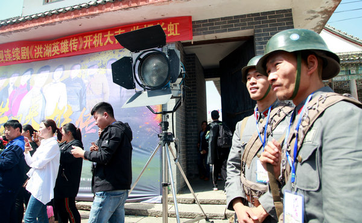

4月18日上午10点，以“传承红色基因，弘扬红色文化”为主旨的大型红色题材电视连续剧《洪湖英雄传》在洪湖市瞿家湾镇老街正式开机。市人大常委会主任王先标、市政协副主席陈峰、市人武部部长陈继梁出席开机仪式。
该剧汇集了老中青三代实力派演员，著名青年演员陈伟栋饰演男主角翟天云、刘园媛饰演穆红菱、周梓言饰演秦江兰，人气与日俱增的阳光系小生崔丁、冯凯在剧中分别饰演八鸭、古贺，更让人惊喜的是，《洪湖英雄传》强势集结了黑子、张立、马迎春、徐雷智等一众老戏骨，诸多人民表演艺术家的实力坐镇，必将为观众奉献一场精彩的演技大秀。
传承红色基因 革命精神血脉永续
《洪湖英雄传》是响应党和国家“继承先辈遗志，传承红色基因”文化理念的献礼之作。以男主人公翟天云的曲折经历为主线，主要讲述了洪湖儿女在中国共产党的领导下，不畏强暴，支持新四军抗日救国的传奇故事。
据悉，《洪湖英雄传》有别于传统的同类题材作品，还原和再现了抗战时期洪湖儿女的精神风貌，在表现手法上，对传统红色文化进行了创新转化，对于当代青年的世界观有积极的教育意义。
著名导演焦晓雨希望通过《洪湖英雄传》，再现那段金戈铁马的红色征程，让更多的年轻观众感受到今日和平幸福生活的来之不易，一寸山河一寸血，一抔黄土一抔魂，吾辈应继承先辈遗志，传承红色基因。
强势班底协力 再造洪湖经典IP

有《洪湖赤卫队》珠玉在前，对于《洪湖英雄传》将如何塑造洪湖这一红色经典IP，外界格外瞩目。制片人王波表示，《洪湖赤卫队》是几代人经典的红色记忆，《洪湖英雄传》将怀抱致敬经典、致敬先烈的红色信念，匠心打造一部能够让更多年轻人了解洪湖、铭记民族抗日历史的佳作。
为实现这一夙愿，塑造一部经得起岁月琢磨和受众推敲的红色佳作。《洪湖英雄传》斥资5000万左右，匹配了专业强大的制作团队。出品方威克传媒是国内最具实力的，集影视作品投资、创作生产、发行、后电影开发、媒体运营等多种产业链条式经营模式于一体的新三板上市公司。
总制片人王波为影片保驾护航，希望《洪湖英雄传》能够让观众感受到革命年代的正能量，点燃国民的爱国激情。
制片人、演员王梦露2002年7月出生于湖北省洪湖市，早年在浙江横店启蒙学习表演，曾制片过《冷少，别跑》，《红星闪闪》、《法医冷严夕》、《无悔青春》、《佣兵狂人》、《雨如》等多部影视作品，并在制片《冷少，别跑》饰演女二号，《红星闪闪》饰演女二号，《法医冷严夕》饰演女二号等多部剧中饰演重要角色。
著名导演焦晓雨曾执导过《地雷战》《大刀记》《荡寇》《兵临村下》等多部红色题材作品，此次执导《洪湖英雄传》，导演与主创团队召开了多次创作会议，导演焦晓雨十分重视这部作品，表示自己将倾注全部心血，为观众奉献一部兼具艺术性和观赏性的红色佳作。
众实力主创集结，《洪湖英雄传》或将成为继《潜伏》、《伪装者》、《红色》、《战长沙》等革命题材佳作后的又一巨献，而这部最值得期待的新视角主旋律作品，将如一剂唤醒民族自豪感、提升民族自信心，并让中华儿女增强使命感和责任感的强心针，带给剧迷无限惊喜。
弘扬红色文化 带动洪湖产业发展
此次《洪湖英雄传》的拍摄将通过镜头语言，向全国传递洪湖的景色之美、人文之秀及革命之魂，《洪湖英雄传》将成为洪湖的一张立体名片，在弘扬红色文化的同时，促进洪湖旅游文化产业的发展。
这部由北京二十一世纪威克传媒股份有限公司出品，中娱文化股份有限公司、中融国盛（北京）投资基金管理有限公司、山东鲁信文化传媒投资集团有限公司、烟台文化基金、河南电视发展传媒有限公司、北京晓晓未来文化传媒有限公司联合出品，汪炜楠担纲出品人，王波担纲制片人，焦晓雨执导，关键、宋建杰编剧，陈伟栋、刘园媛、周梓言、崔丁、冯凯、黑子、张立、马迎春、徐雷智等人联袂主演的大型红色题材电视连续剧《洪湖英雄传》，预计将于2019年与广大观众在央视及各大卫视见面。